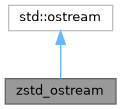
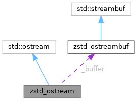

|
Harper Sieve of Collatz
|
Creates an ostream subclass and connects it to a zstd_ostreambuf so it may be passed around like a normal ostream.
More...
#include <zstd_compress.hpp>


Public Member Functions | |
| void | finalize () |
| Expose finalize for the streambuf. Nothing more. | |
Lifecycle Management | |
| zstd_ostream (const zstd_ostream &)=delete | |
| Disallow copying and moving. | |
| zstd_ostream & | operator= (const zstd_ostream &)=delete |
| Disallow copying and moving. | |
| zstd_ostream (std::ostream &underlying, int level) | |
Constructor takes an underlying ostream to connect with a zstd_ostreambuf. | |
Private Attributes | |
| zstd_ostreambuf | _buffer |
The actual streambuf to send data in/out of, connected to this objects rdbuf. | |
Creates an ostream subclass and connects it to a zstd_ostreambuf so it may be passed around like a normal ostream.
This class largely just wraps the zstd_ostreambuf to make writing ZSTD data easier.
|
inline |
Constructor takes an underlying ostream to connect with a zstd_ostreambuf.
zstd_ostreambuf documentation. | underlying | The destination ostream where ZSTD should send compressed data. |
| level | The compression level to use. |